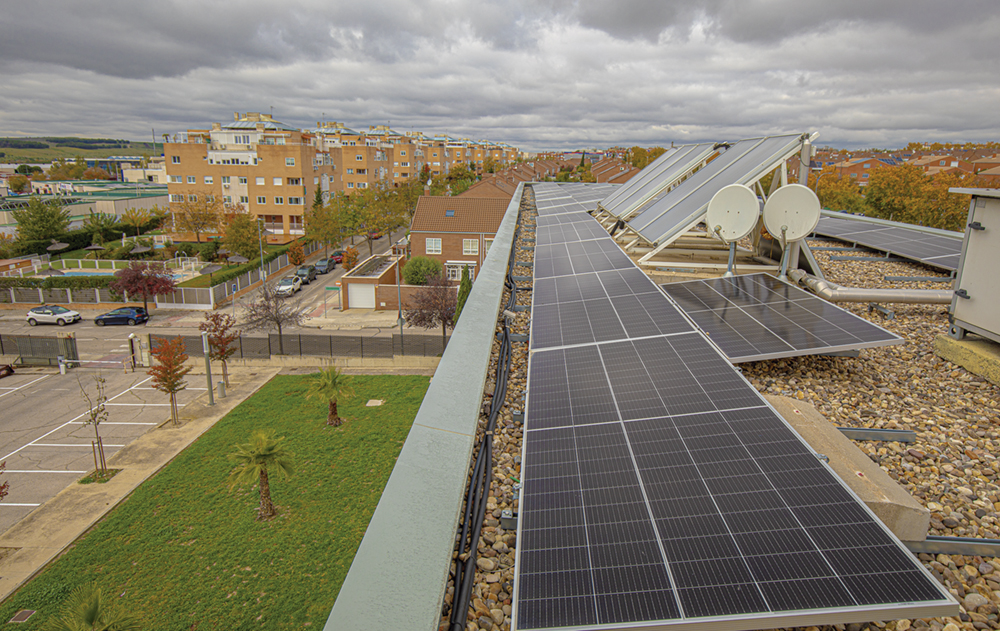
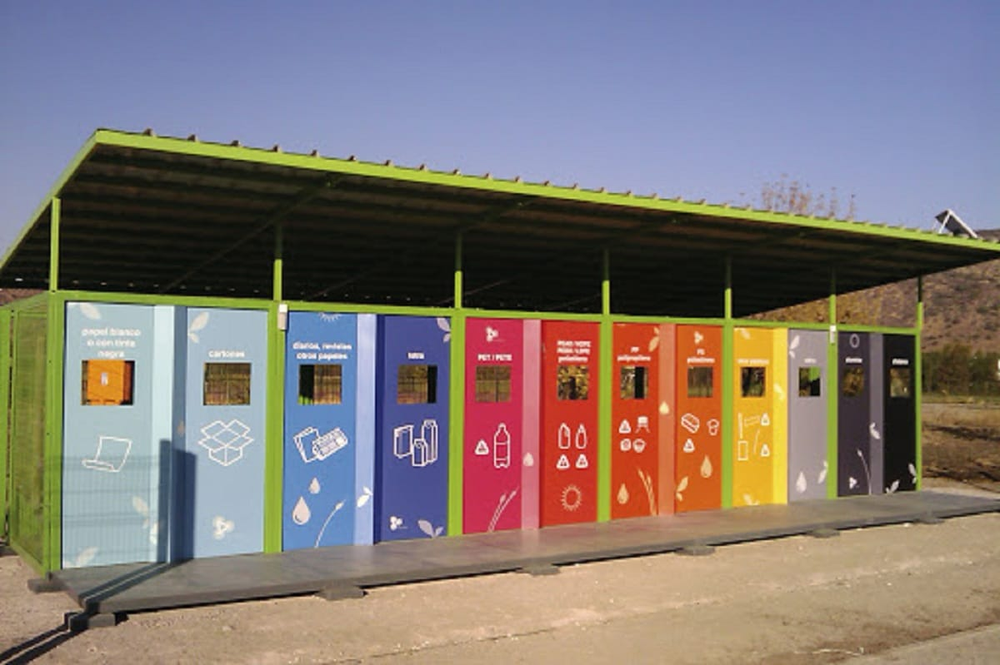
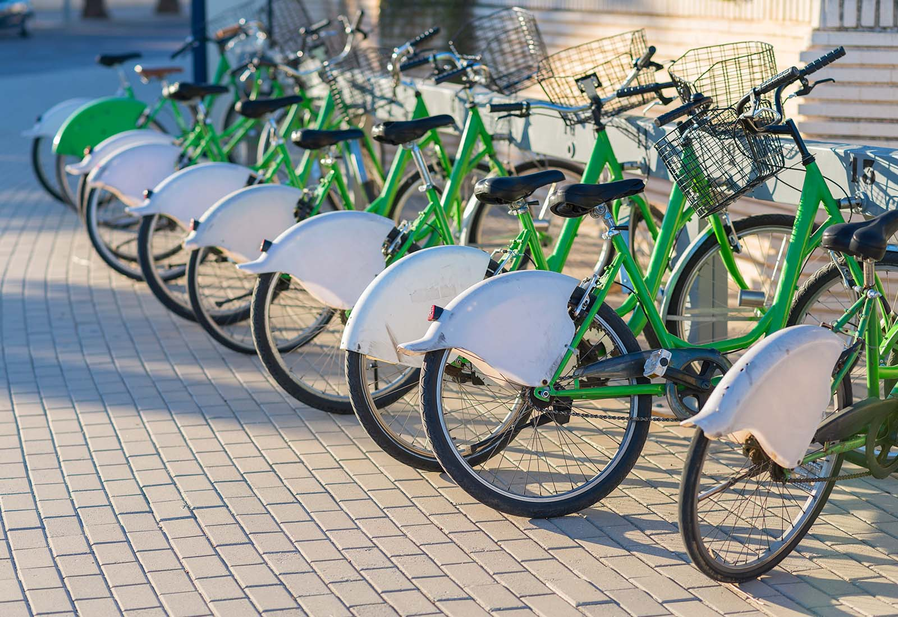
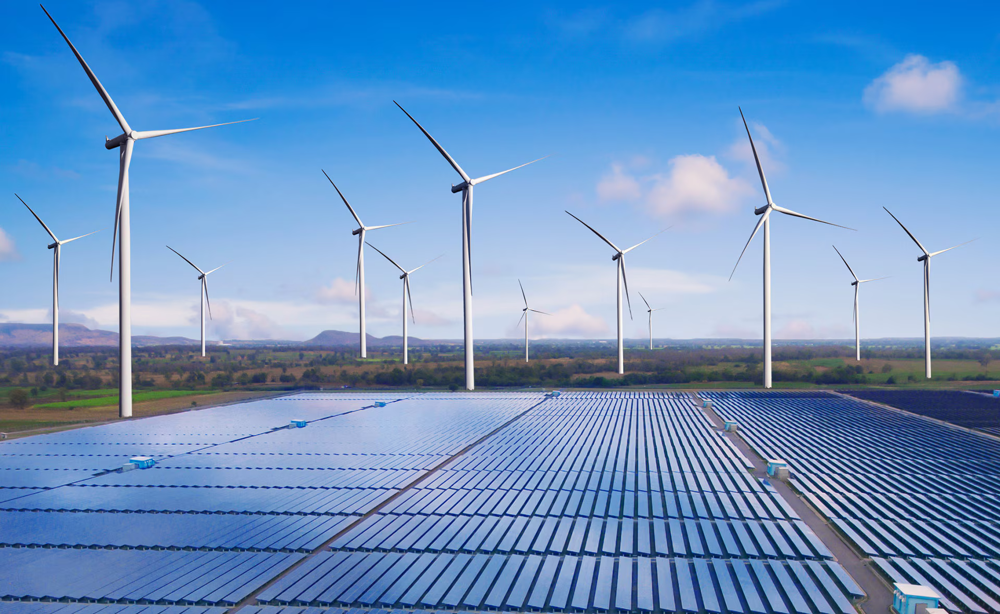

1. Implementación de Energías Renovables
Paneles Solares en Edificios Municipales

Proyectos destacados:
Cubierta solar del Polideportivo Municipal: 156 paneles fotovoltaicos (67 kWp)
Escola El Vinyet: Instalación de 45 paneles para autoconsumo
Iniciativa "Comparte el Sol":
Programa municipal que promueve instalaciones fotovoltaicas compartidas en comunidades de vecinos con subvenciones del 40-50%.
42 ton
Reducción emisiones CO₂ anuales
85.000 kWh
Producción energía limpia anual
180.000€
Inversión últimos 3 años
2. Puntos de Reciclaje en la Ciudad
Sistema de Recogida Selectiva:

- Puerta a puerta: Para orgánico, envases, papel y resto
- 5 puntos verdes fijos: En diferentes barrios del municipio
- 13 áreas de compostaje comunitario
- Recogida de aceite usado: 12 contenedores específicos
Estadísticas de reciclaje (2023):
| Residuo | Cantidad | % Reciclaje |
|---|---|---|
| Orgánico | 987 ton | 42% |
| Envases | 245 ton | 68% |
| Papel/Cartón | 198 ton | 75% |
| Vidrio | 312 ton | 82% |
Innovación:
App "Palau Recicla": Notificaciones y gestión de residuos
Contenedores inteligentes: Con sensores de llenado
Talleres de reparación: Para alargar vida útil de objetos
3. Programas de Educación Ambiental en Colegios
Programa "Escoles Verdes" - 100% centros participantes:

Escola El Vinyet
Bandera Verde ADEAC
Escola Can Jofresa
Proyecto biodiversidad escolar
Escola Joan Maragall
Huerto ecológico educativo
Actividades regulares:
- "Patrulla Verde": Alumnos responsables del reciclaje en clase
- Talleres mensuales: Compostaje escolar, eficiencia energética, movilidad sostenible
- Visitas educativas: A la depuradora y planta de compostaje
Proyectos destacados 2023-2024:
"La energía en nuestras manos": Medición consumo energético escolar
"Bicibús escolar": Rutas seguras en bici
"Mariposario educativo": Conservación de polinizadores
4. Promoción del Transporte Público y Bicicletas
Red de Movilidad Sostenible:

RED CICLISTA MUNICIPAL
• 18 km de carril bici
• Conexión con:
- Mollet del Vallès
- Sentmenat
- Estación R8 (FFCC)
• 150 plazas de aparcamiento bici
• Conexión con:
- Mollet del Vallès
- Sentmenat
- Estación R8 (FFCC)
• 150 plazas de aparcamiento bici
Iniciativas activas:
5 rutas
"Bicibús escolar" con monitorización
30% / 50%
Descuento transporte jóvenes/mayores
+45%
Uso carril bici desde 2020
Datos de uso:
- Carril bici: +45% uso desde 2020
- Transporte público: 28% población usuaria regular
- Parkings disuasorios: 2 áreas con 120 plazas
5. Control de Emisiones y Regulación Ambiental
Plan de Acción por la Energía Sostenible y el Clima (PAESC):

Objetivos 2030: Reducir 40% emisiones CO₂ | 27% energía renovable | 27% mejora eficiencia energética
Medidas implementadas:
Ordenanza de Protección Ambiental: Regulación emisiones calefacciones, control ruido nocturno, gestión residuos construcción
Zonas de Bajas Emisiones (ZBE): Restricción tráfico centro histórico, prioridad peatones/bicis
Monitorización calidad aire: 3 estaciones medición permanente, datos públicos en tiempo real
Resultados 2023:
| Indicador | 2023 | Objetivo |
|---|---|---|
| Emisiones CO₂/t/hab | 3.8 | 2.9 (2030) |
| Energía renovable | 18% | 27% (2030) |
| Residuos reciclados | 52% | 60% (2025) |
| Movilidad sostenible | 34% | 45% (2030) |
Resumen de Logros Ambientales
850.000€
Inversión total 2020-2023
Distribución de la inversión:
Palau-solità i Plegamans, comprometido con un futuro sostenible